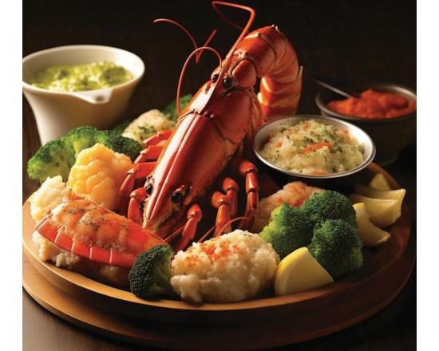

The chef behind every plate
Award-Winning Chef Relentless Aaron
First Place at The Great Rockdale County Cook-off, April 9, 2016. Today he cooks for Atlanta around the clock through Relentless Eats on Uber Eats and Gourmet Grub / Shrimp & Lobster on DoorDash.

A First Place cook-off winner
In 2016, Relentless Aaron took First Place at The Great Rockdale County Cook-off in Georgia. The win confirmed what friends and family already knew: his food has something special. That same approach runs through every recipe on our menu today.
How he cooks
Chef Relentless Aaron believes in food that is generous, comforting and made with care. Sauces are stirred until they are silky. Seafood comes off the heat at the right moment. Big orders get the same attention as small ones. And everything is packed to arrive hot, whether it is noon or three in the morning.
Every dish is his recipe
From the house shrimp pasta Alfredo to the XX doubles, lobster platters and honey BBQ wings, each dish on the Relentless Eats and Gourmet Grub menus was created by Chef Relentless Aaron.


